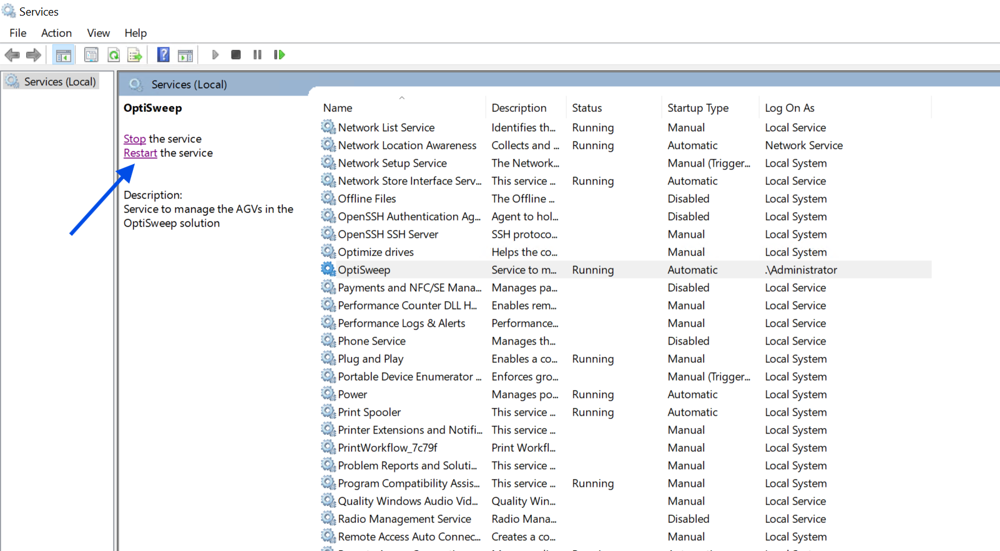

| Procedure ID | proc_windows_event_viewer_services_optisweep_wcswebapplication_diagnostic_v1 |
|---|---|
| Title | Windows Event Viewer and Services diagnostic for OptiSweep and WCSWebApplication failures |
| Procedure Type | diagnostic |
| Primary Role | L2_support |
| Support Safe | Yes |
| Capability Tags | windows_service_or_event_log, wcs_service_health |
| Access Surface | event_viewer |
| Audience Roles | L2_support |
| Failure Pattern Tags | service_crash_or_restart, system_fault |
| Validation Status | needs_sme_review |
| Merge Status | source_finalized |
Use Windows Event Viewer / services to inspect the live Windows Application and System logs, then verify the current OptiSweep service state. Correlate WCSWebApplication database-command errors around 6:35-6:36 AM with OptiSweep Service Control Manager Event 7031 and the current Windows Services status before further recovery.
Use Windows Event Viewer / services when the live OptiSweep or WCS-backed system is unresponsive, when clustered WCSWebApplication errors are suspected, or when a service crash or restart must be correlated with the incident. Inspect the live Windows Application and System logs and current Windows Services state before performing further recovery.



Responsible role: L2_support
Instruction:
In Windows Event Viewer / services, open Windows Logs > Application and inspect entries around 2/20/2026 6:35:24-6:36:07 AM. Open the WCSWebApplication error details, including Event ID 20102, and check nearby Application Error or Windows Error Reporting entries.
Expected result:
The Application log shows whether WCSWebApplication Event ID 20102 with 'Failed executing DbCommand (1,840ms)' and nearby clustered application errors are present in the inspected time window.
Stop or Escalate If:
Responsible role: L2_support
Instruction:
In Windows Event Viewer / services, select Windows Logs > System and open the Service Control Manager event for OptiSweep. Check for Event ID 7031, Level Error, and inspect whether the message states that OptiSweep terminated unexpectedly and Windows planned to restart it after 60000 milliseconds.
Expected result:
The System log identifies whether an OptiSweep Event ID 7031 termination is present and whether the event contains the 60000-millisecond restart message.
Stop or Escalate If:
Responsible role: L2_support
Instruction:
In Windows Event Viewer / services, open Windows Services, select OptiSweep, and inspect the current Status and Startup Type.
Expected result:
Windows Services displays the current OptiSweep Status and Startup Type, allowing the live service state to be compared with the Event Viewer evidence.
Stop or Escalate If:
Responsible role: L2_support
Instruction:
Compare the timestamps and live entries in Windows Event Viewer / services with the current incident state and the current OptiSweep status in Windows Services. Do not treat the configured automatic restart as proof that recovery completed.
Expected result:
The diagnostic conclusion separately identifies the observed WCSWebApplication errors, any OptiSweep Event 7031 termination, and the current OptiSweep service state.
Stop or Escalate If: